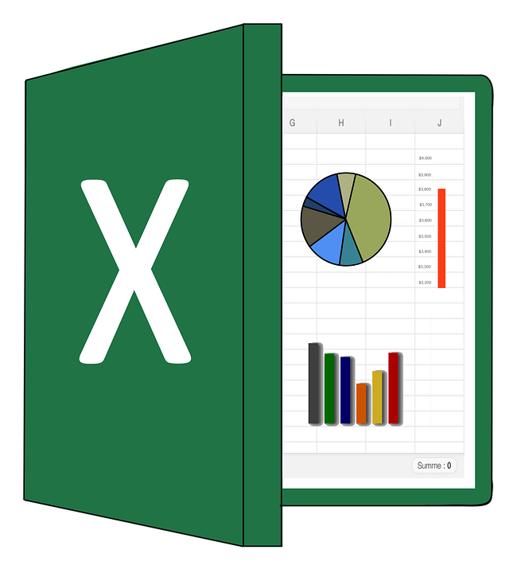

HOME
Cosa so fare
Saper scrivere è un fattore fondamentale per la buona riuscita di obiettivi aziendali e di crescita di un Brand. In uno dei miei post tipo che troverai qui sotto capirai il mio modo di scrivere: come uso i Pilastri della persuasione, come imposto il testo, che rapporto instauro con il lettore ed anche il tipo di call to action.
Saper scrivere ed allo stesso tempo saper effettuare un'ottimizzazione SEO perfetta, vanno di pari passo. Le mie capacità risiedono nell'individuazione delle parole chiave più adatte fino all'ottimizzazione del testo scrivendo ordinatamente tramite: elenchi puntati, la giusta seguenza di titoli, inserimento delle parole chiave in punti strategici e molto altro.

Analisi dati è una delle competenze fondamentali per chi lavora in questo campo. Attraverso i numeri si riesce a capire ogni cosa, sapere dove e come agire per risolvere eventuali problemi. Collegare ad un sito o a qualsiasi attività web Google Analytics ormai nel 2019 è diventato fondamentale. Nella sezione qui sotto potrete trovare un rapporto tipico su G.A. effettuato ed elaborato da me.
Excel è una competenza che ho voluto sviluppare per una questione di velocità, ottimizzazione tempi e ordine nei miei progetti. Infatti tramite Excel posso creare file dove raggruppare e studiare parole chiave, impostare e compilare tabelle per il raggruppamento di dati importanti e molto altro.

La conoscenza base del linguaggio HTML e CSS mi permette di avere una conoscienza quasi a 360° di questo campo. Saper creare siti WEB da zero su misura per chiunque non è una capacità base, e saper applicare il linguaggio CSS per dare un tocco di stile in più ben che meno.